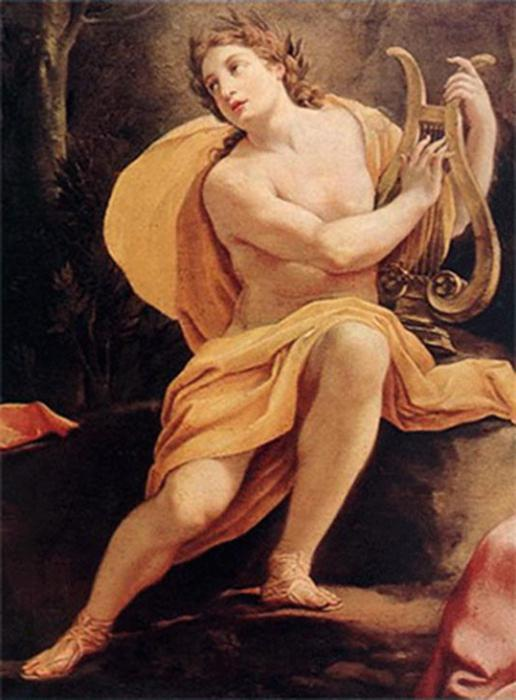
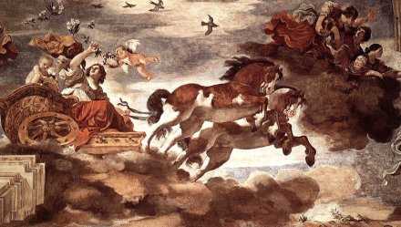
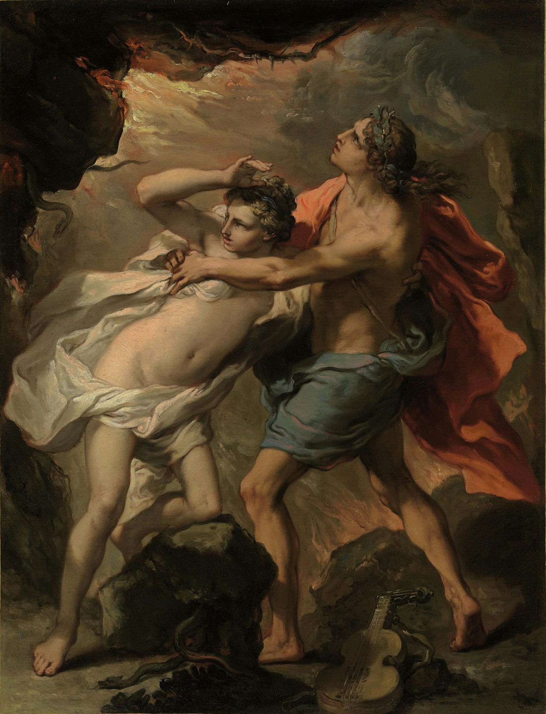
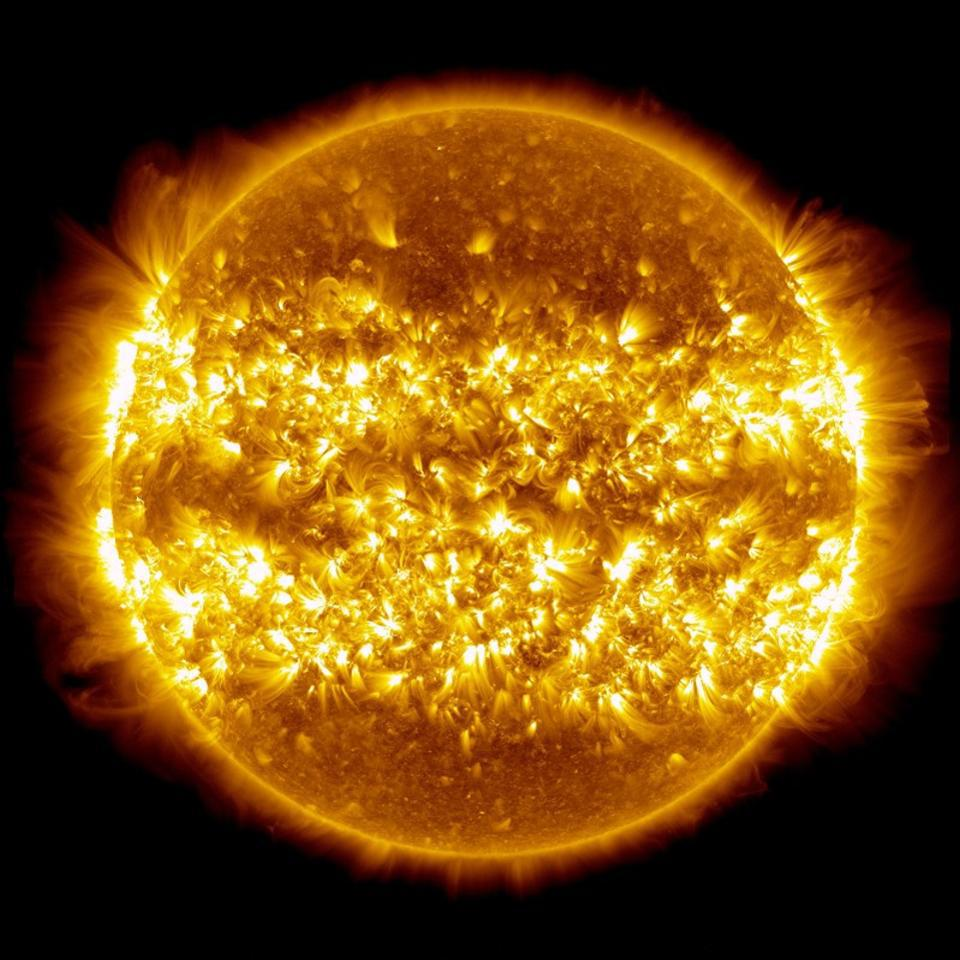
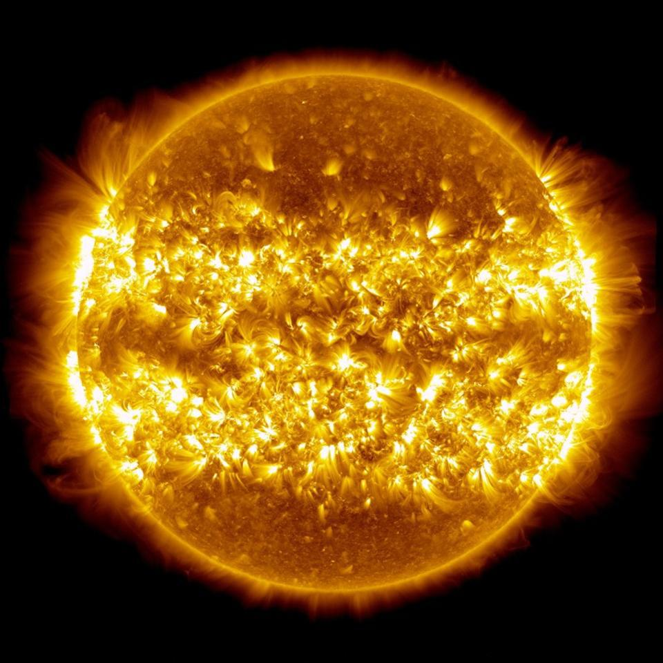

อพอลโล เทพแห่งแสงอาทิตย์ และดวงอาทิตย์
ชื่อกรีก : เทพอพอลโล Apollo
ชื่อโรมัน : เทพอพอลโล Apollo
เทพอพอลโล เป็นชื่อเทพในภาษากรีก เมื่อโรมันได้รับไปแล้วยังเรียกเหมือนเดิม(อันนี้ขอบอกว่าไม่แน่ใจนักค่ะ ด้วยว่า พอสืบสาวราวเรื่องเข้าจริง คล้าย ๆ จะกลายเป็นว่า อพอลโลโลเป็นเทพที่มีอยู่ก่อนไม่ว่าจะกรีกหรือโรมัน ดูคล้ายจะเป็นเทพเดิมในหลายความเชื่อยังไงอยู่ แต่เพื่อไม่ให้สับสนมากไป ก็เอาเป็นว่าท้าวเธอถูกส่งมาจากกรีกไปก่อนก็แล้วกันนะ)
อพอลโลเป็นเทพแห่งดวงอาทิตย์ ภาพลักษณ์ของเขาคือเทพหนุ่มใบหน้าเกลี้ยงเกลาไม่มีเรา ผมยาว อาจถือพวงหรีดหรือช่อลอเรล, คันศร, กระบอกลูกธนู, กา และพิณ แม้ว่าตามความเชื่อของชาวกรีก เทพแห่งดวงอาทิตย์อาจมีอยู่หลายองค์ตั้งแต่รุ่นเก่าจนมาถึงวงเวียนโอลิมเปียน และยังมีเทพีแห่งแสงด้วย และอพอลโลก็เป็นหนึ่งในนั้น โดยที่พระองค์ก็รับหน้าที่เป็นแสงสว่าง มีอีกนามว่า ฟีบัส หรือบางทีเรียกคู่กันว่าฟีบัสอพอลโล แต่จากการอ่านตำราหลายเล่ม ผมพบว่านอกเหนือจากการเป็นเทพแห่งแสงสว่างแล้ว อพอลโลยังเป็นเทพแห่งการอะไรต่อมิอะไรมากมายไปหมด ไม่ว่าจะเป็นการยิงธนู การรรักษาโรค การทำนาย ที่สำคัญกว่าอื่นใดเลยคือท้าวเธอเป็นเทพแห่งสัจจะ
ด้วยหน้าที่มากมายอย่างนี้ จึงแน่ใจได้เลยว่าอพอลโลย่อมต้องเป็นเทพที่มีคนนิยมมากแน่ ไม่แปลกใจเลยว่า เมื่อชาวโรมันรับเอาอารยธรรมกรีกไปใช้(หมายถึงเรื่องเทพ) อพอลโลก็ยังอยู่อย่างเดิม ไม่มีชื่ออื่น ไม่มีใครเปลี่ยนแปลง
หมายเหตุ : สุริยเทพองค์เดิมคือไฮเพอริออน แต่เมื่อโคนัสถูกโค่น ตำแหน่งสุริยเทพเลยหลุดจากมือไฮเพอริออน ไปสู่มือของเฮอริออส ซึ่งเป็นลูกชายของไฮเพอริออน นอกจากนี้ธิดาของเขายังรับหน้าที่เป็นเทพีเกี่ยวกับแสงอีกสององค์คือ อีออส-อุษาเทวี และเนเซลีนี-จันทราเทวี

เทพอพอลโล
ที่มา :
https://th.hoboetc.com/novosti-i-obschestvo/23512-bog-apollon-drevnegrecheskiy-bog-solnca.html
อพอลโล (Apollo ภาษากรีก: อพอลลอน) บุตรชายคนโตของมหาเทพซุส กับนางเลโต เป็นหนึ่งใน 12 เทพ แห่งโอลิมปัส เป็นเทพแห่งแสงสว่าง หรือเทพแห่งดวงอาทิตย์ รวมถึงเป็นเทพแห่งสัจจะและการดนตรีด้วย อพอลโล มีพี่สาวฝาแฝดชื่อ อาร์เทมิส หรือ ไดอาน่า (ในโรมัน) ซึ่งเป็นเทพีแห่งดวงจันทร์
วิหารของเทพอพอลโลนั้น มีอยู่ดาษดื่นทั่วไปแต่ที่สำคัญที่สุดได้แก่ วิหาร ณ เมืองเดลฟี ใกล้ทิวเขา พาร์นาซัส รูปอนุสาวรีย์ โคลอสซัส (Colosus) ที่เขาสร้างอุทิศแด่ ณ เกาะ โรดส์ (Rhodes) นับเป็นสิ่งหนึ่ง ในสิ่งอัศจรรย์ทั้ง 7 ของโลกสมัยโบราณทีเดียว
เทพอพอลโลมีวีรกรรมสังหารเหล่าคนพาลมากมาย นอกจากเคยฆ่างูยักษ์ไพธอนจนมีชื่อเสียงแล้ว ยังสามารถสังหารยักษ์ อโลอาดี (Aloadae) และ อีฟิอัลทิส (Ephialtes) ซึ่งเป็นเชื้อสายของ วงศ์ไทแทน ที่คิดล้มซุสเพื่อฟื้นวงศ์ไทแทนคืนมา เป็นต้น
แต่มีครั้งหนึ่งที่ อพอลโลยังไม่อาจเอาชนะมนุษย์ คนหนึ่งได้จนร้อนถึงเทพซุสต้องออกมาประนีประนอม บุรุษเดินดิน คนนั้นนามว่า เฮอร์คิวลิส เหตุเกิดเพราะ เฮอร์คิวลิส ไปขอคำพยากรณ์ที่วิหารเดลฟี แล้วได้รับคำทำนาย ไม่ถูกใจ จึงล้มโต๊ะพิธีในวิหาร แล้วฉวยเอากระถางธูปไป เทพอพอลโล รีบรุดตามไป ท้าเล่นมวยปล้ำ เพื่อชิงเอากระถางคืน ปล้ำกันอยู่นานไม่อาจรู้แพ้ชนะ ซุสเห็นท่าว่าขืนปล่อยไว้นาน อพอลโล อาจจะเสียเปรียบ พ่ายแพ้แก่มนุษย์เข้าได้ และ อาจเสียหน้าวงศ์เทพแน่ จึงลงไปห้ามปรามให้เลิกราต่อกัน ขอให้เฮอร์คิวลิส คืนกระถางธูป แก่อพอลโล แล้วให้เลิกราเรื่องบาดหมางต่อกัน เรื่องราวก็เลยจบลงด้วยดี
เทพอพอลโลมีอุปนิสัยไม่ยอมแพ้ใครอยู่ไม่น้อย เห็นได้จากที่ไปแข่งเป่าขลุ่ยกับมาไซยาส์ซึ่งเป็นเทพชั้นรอง แล้วตั้งกรรมการตัดสินว่า ผู้ใดเป่าเก่งกว่ากัน ท่านไมดาส (Midas ตามประวัติกล่าวว่าท่านจับอะไรก็จะกลายเป็นทองคำ) เกิดตัดสิน เข้าข้างมาไซยาส์ เพียงเท่านี้ อพอลโลก็ไม่ฟังอะไรอีกแล้ว โดยได้สาปให้ไมดาสมีหูเป็นลาไปทันที

เทพอพอลโลบนราชรถสุริยา ศิลปบาโรค ราวปี 1622
ที่มา :
https://janghuman.files.wordpress.com/2008/01/guercinoaurora440.jpg
ความรักของอพอลโล
ตำนานความรักของอพอลโลที่เป็นที่น่าจดจำอีกตำนานหนึ่งคือ เรื่องราวความรักของอพอลโลและนิมพ์ดาฟนี (นิมพ์คือสตรีที่เป็นตัวแทนสิ่งต่าง ๆ ในธรรมชาติ) เล่ากันว่าดาฟนีเป็นธิดาของเพอนีอัส เทพแห่งแม่น้ำ อพอลโลเมื่อได้เนนางก็ตกหลุมรักแต่แรกพบ อพอลโลได้เดินไปหาดาฟนีแต่นางหันมาพบเขาก่อน ดาฟนีรู้ทันจึงได้หนีอพอลโลขึ้นไปบนภูเขา อพอลโลได้ไล่ตามนางไปอย่างไม่ลดละ เมื่อเขาจวนจะขว้าตัวนาง ดาฟนีได้องขอให้เพอนีอัสพ่อของนางช่วย เพอนีอัสรับรู้คำขอของนางด้วยญาณ จึงได้ทำการเสกนางให้กลายเป็นต้นลอเรล เปลือกไม้เริ่มงอกปกคลุมผิวกาย แขนและมือกลายเป็นกิ่งและใบ นิ้วเท้ากลายเป็นราก ดวงหน้าอันงดงามของดาฟนีถูกฝังไว้กับยอดไม้ ทันทีที่อพอลโลคว้านาง เขาก็สัมผัสได้ถึงเปลือกไม้ นางกลายเป็นต้นไม้ไปต่อหน้าต่อตา เมื่อความรักของเขาไม่สมหวัง อพอลโลจึงได้ทำการรับต้นลอเรลเป็นต้นไม้ประจำตัวและเป็นสัญลักษณ์ของตน อีกทั้งมงกุฏลอเรลยังเป็นสัญลัษณ์แห่งชัยชนะอีกด้วย
อพอลโลรักไฮยาซินธัส เจ้าชายจากลาเคไดโมเนีย แต่เซฟีรัส เทพแห่งลมตะวันตกเกิดความอิจฉา ในขณะที่อพอลโลและไฮยาซินทัสเล่นขว้างจักรกัน เซฟีรัสจึงให้ให้จักรของอพอลโลไปโดนศรีษะของไฮยาซินทัสจนเสียชีวิต อพอลโลเสียใจมากจึงเปลี่ยนให้ไฮยาซินทัสเป็นดอกไม้ หรือดอกไฮยาซิน
อพอลโลเป็น1ใน 12 เทพแห่งโอลิมปัส โดยเป็นบุตรชายของมหาเทพซุส เทพแห่งท้องฟ้า และนางเลโต อพอลโลเป็นเทพแห่งดวงอาทิตย์ แสงสว่าง การดนตรี สัจจะ และการแพทย์ โดยทั่วไป รูปปั้นอะพอลโล จะถือเครื่องดนตรีคล้ายพิณและมีลูกบอลทองคำ ที่เป็นสัญลักษณ์ของดวงอาทิตย์ ปัจจุบัน อพอลโลเป็นชื่อที่ถูกอ้างอิงบ่อย ๆ ในทางที่เกี่ยวกับแสงสว่างหรือความสำเร็จ เช่น เป็นชื่อปฏิบัติการ ทางอวกาศ ของนาซาที่เรียกว่า โครงการอพอลโล เป็นต้น

ภาพวาด Orpheus & Eurydice โดย Gaetano Gandolfi (1734-1802) ศิลปินยุคบาโรกชาวอิตาลี
ที่มา :
https://www.facebook.com/GroundControlTh/photos/a.122542509389132/261198915523490/?type=3
 
